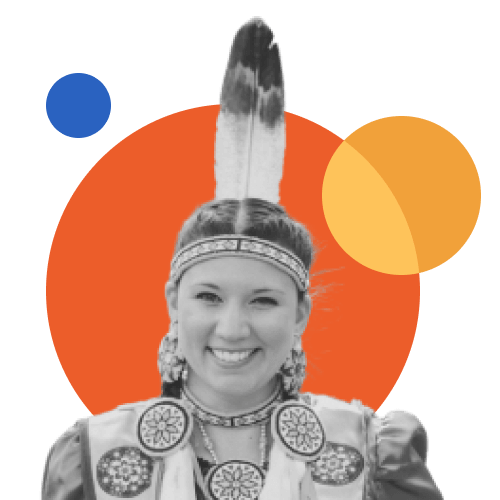
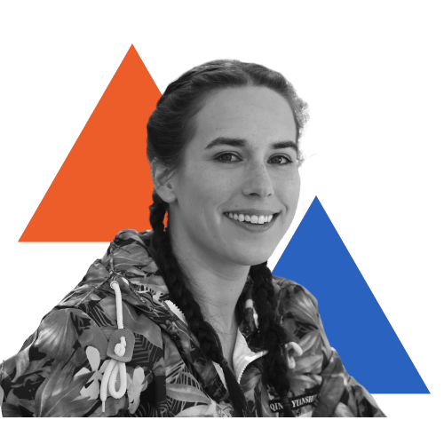
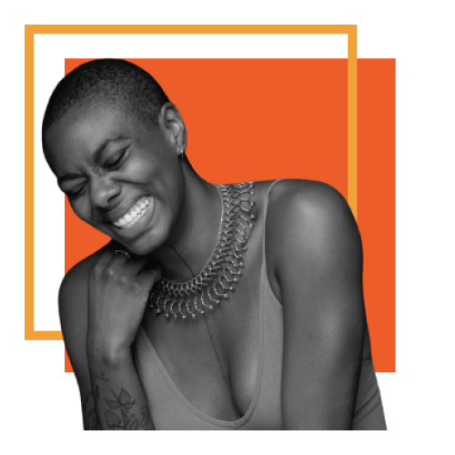
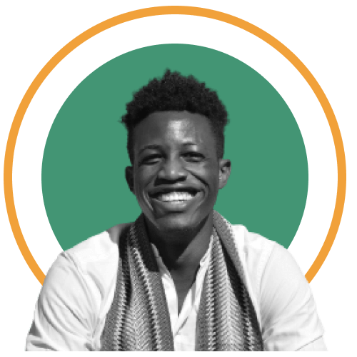
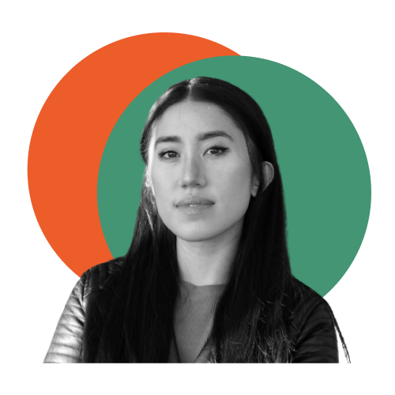

2022 Young Impact Leaders
30 Changemakers to watch for
Entrepreneurs get a lot of praise for starting something new, and making big waves in the social impact world — and they should.
But it's also true that much of social impact happens through bold, incremental steps inside existing organizations.
Through implementing courageous and innovative practices, initiatives and policies from the inside, intrapreneurs are driving change in the social impact world. And we think they deserve all the celebration for their work.
That is why Future of Good's 30 Young Impact Leaders To Watch shines a light on what this tough intrapreneurial work looks like. These 30 brave Canadian intrapreneurs are challenging traditional norms, mindsets and practices and pushing different ways of delivering social impact in five areas:
This annual list is to celebrate young leaders doing this game-changing work, day in and day out. Let's go.
Inclusion

Dana Carriere
+
Lecturer at Edwards School of Business at University of Saskatchewan. She/Her
Dana Carriere
Dana Carriere is a proud Cree/Metis woman with a strong connection to her culture, values, and worldview. As a lecturer, she is innovating the business curriculum in University of Saskatchewan with a commitment to truth and reconciliation, and advocates for more inclusive practices in post-secondary environments and in workplaces by working to bring more Indigenous students into the faculty.
Jade Pichette
+
Director of Programs at Pride at Work Canada. They/them
Jade Pichette
In their work at Pride at Work Canada, Jade Pichette implements engaging programs for Canadian work that envision a world where gender and sexual diversity are included and celebrated. They also work with over 200 employers and over 60 community groups across Canada around gender expression, gender identity, and sexual orientation inclusion.
Kate McDougall
+
Regional Youth Liaison at Centre for Newcomers Society of Calgary. She/Her
Kate McDougall
Through her experience working with the Centre for Newcomers, Kate McDougall has a deep understanding of the impacts of trauma and the role culture can play in successful service delivery. McDougall is also heavily involved in fund development and secured $900k in funding for vulnerable newcomers at the onset of the pandemic.
Misko McGregor
+
Manager, Indigenous Financial Literacy at CPA Canada. Ininii/he/him
Misko McGregor
Misko Kijig McGregor is an Anishinaabe from Kitigan Zibi and Aamjiwnaang First Nations with a passion for Indigenous economic development, social finance, and financial literacy. Through his work at CPA Canada, McGregor is involved with programs like mentoring Indigneous youth, and developing tools for Indigenous financial literacy.
Rachel Radyk
+
RN, Program of Inidgenous Health Registered Nurses’ Association of Ontario (RNAO). She/her/kwe
Rachel Radyk
Rachel Radyk (WaabanoKwe) is an AnishinaabeKwe and proud member of the Chippewas of Georgina Island. She is a registered nurse with a passion for Indigenous health and leadership. Rachel has held workshops and given presentations across Ontario striving to educate future nurses on indigenous health to advocate for Indigenous perspectives within nursing. She is currently serving as the Program Manager of Indigenous Health for the Registered Nurses’ Association of Ontario (RNAO).
Shagun Kanwar
+
Stewardship Coordinator at Hot Docs Canadian International Documentary Festival and/or Board Member/Treasurer at Breakthroughs Film Festival. She/her
Shagun Kanwar
Shagun Kanwar is South-Asian filmmaker and producer based in Toronto, with a mission to share diverse stories of the community which are often unheard or misunderstood. She works to develop filmmaking initiatives to level the playing field for marginalized groups that lack the resources, and access in the film industry.
Shamoy Marstin
+
Program Specialist, Urban Community Programs at Jays Care Foundation. She/Her
Shamoy Marstin
Tyler Boyce
+
Executive Director at The Enchanté Network. He/Him
Tyler Boyce
Tyler Boyce is a Kenyan and Somali Black queer public policy professional and community organizer. As the executive director of The Enchanté Network, Boyce leads a national network of 160 pride centres and 2SLGBTQ+ service providers across Canada and helps queer and trans organization grow while advocating for greater funding.
Ziyi Shi
+
VP Legal and D&I Lead at Real Ventures. She/Her
Ziyi Shi
Ziyi Shi is a lawyer who ditched big firms to go work with the small entrepreneurs in a Venture Fund. As a firm diversity advocate she has worked to push her new partners to embrace internal and funding policies that carry weight for equity in the startup world by advocating for underrepresented entrepreneurs to get funding.
Youth engagement
Jennyvel Macapayad
+
Senior Programs Manager at On Site Placement Services. She/her
Jennyvel Macapayad
In her work, Jennyvel Macapayad advocates for inclusive workplaces and supporting young leaders that are passionate about diversity and inclusion. At her current role at OSP, she is heavily involved with grant development, manages six staff members and leads the strategic planning, evaluation, and delivery of OSP’s programs and services.

Jordan Smith
+
Our Communities, Our Voices Program Officer at the Atlantic Council for International Cooperation. She/her
Jordan Smith
Maham Kaleem
+
Campaigner at the David Suzuki Foundation. She/her
Maham Kaleem
Maham Kaleem is an advocate for youth voting, and has worked to raise the rates of civic engagement. In the Greater Toronto and Greater Ottawa areas, she developed a multilingual (6 languages so far) approach to build relationships with BIPOC youth, and Helping DSF learn the importance of messaging and communication in different languages.
Maxime Crawford-Holland
+
Project Manager for Community Building Youth Futures Yukon. He/they
Maxime Crawford-Holland
At Community Building Youth Futures, Maxime Crawford-Holland represents a collective of young people, youth-serving organizations, and other groups working together in the Yukon, as he supports them through community organizing. He works alongside community members to develop system-wide solutions that support youth to make successful transitions through high school
Omar Goodgame
+
Youth Engagement Coordinator at EveryMind Mental Health Services. He/him
Omar Goodgame
Omar Goodgame has over 10 years of experience in the community services and non-profit sector, where he has developed projects supporting the growth of more than 100 youth across Peel Region in the last five years. He works on leading projects and developing youth engagement strategies to support child and youth mental health services in Peel.
Riley Winters
+
Policy Advisor at Inuit Tapiriit Kanatami and co-lead for the Inuit Nunangat University. She/her
Riley Winters
Riley Winters is an advocate for Inuit youth and works to dismantle barriers within post-secondary institutions in order to improve the lives of Inuit in Canada. She has co-lead the design and development of the Inuit Nunangat University, and is working to build a space that values and upholds Inuit knowledge.
Stacie Smith
+
Executive Director of the Young Canadians Roundtable on Health. She/her
Stacie Smith
Through her advocacy and campaign work, Stacie Smith is trying to close the gap between youth and policy makers regarding youth mental and physical health and wellbeing. She assisted in leading a national campaign to increase the level of vaccinations in children and worked on many initiatives to increase youth health.
Tech for Good
Ashley Casovan
+
Executive Director of the Responsible AI Institute. She/her
Ashley Casovan
Erin Knight
+
Digital Rights Campaigner at Open Media. She/her
Erin Knight
Eva Taylor
+
Director, Social Impact at Hootsuite. She/her
Eva Taylor
Eva Taylor has over 12 years of experience in creating programs that connect organizations with the communities they serve. In her work Taylor has created numerous programs and initiatives designed to empower its employees to give back to the communities where they live and work, including the Hootsuite for Good Program.
Samuel Proulx
+
Accessibility Evangelist at Fable. He/him
Samuel Proulx
As a blind person, Sam Proulx knows and values the importance of accessibility in all aspects of life and is a strong advocate for the inclusion of people with disabilities in the digital world. Along with his lifelong advocacy work, Proulx brings his previous experience as Fable’s community manager, through weaving inclusive design into Fable’s culture, value and mission.
Health & Well-Being
Keetha Mercer
+
Senior Director, Community Initiatives & Grants. She/they
Keetha Mercer
Krystal Valencia
+
Director of Development at Home Suite Hope. She/her
Krystal Valencia
Maryam Pandi
+
Executive Director at Sexual Assault Centre Kingston. She/her
Maryam Pandi
Maryam Pandi spearheaded the efforts to bring cultural sensitivity into the counselling practices of Sexual Assault Centre Kingston to support racialized victims of gender-based violence. She previously also ran a non-profit outreach program that focused on engaging underrepresented youth in Science, Technology, Engineering, and Medicine (STEM) fields.

Sharita Henry
+
Project Specialist at MakeWay Foundation. They/she
Sharita Henry
At Make Way, Shar Henry works with over 12 charitable initiatives, providing strategy, and administrative support with a focus on serving marginalized and vulnerable populations. They also co-founded Friends of CAB, which provides peer support and culturally appropriate programming for Caribbean/African/Black youth of marginalized genders.
Timi Idris
+
Program Manager, PLANS (Promoting Leadership in health for African Nova Scotians) at Dalhousie University. She/her
Timi Idris
As the Program Manager of PLANS, Timi Idris works to improve health outcomes within the African Nova Scotian community by increasing representation of African Nova Scotians in the health professions through recruitment and retention, community collaborations, and partnerships. She is also a steering member of the Racialized Students Academic Network which seeks to decrease social and academic isolation through networking, mentorship, and advocacy.
Climate & Environment
Anne Herteis
+
Grants & Operations Manager at Community Forests International. She/her
Anne Herteis
Anne Herteis is working on a regional climate action initiative spanning the Wabanaki Forest of the Maritimes that brings together Indigenous and settler approaches to forestry for greater climate and community resilience. She designs and leads projects that achieve climate goals while also prioritizing equity.

Chúk Odenigbo
+
Founding director at Future Ancestors Services. He/him
Chúk Odenigbo

Kat Cadungog
+
Executive Director at Foundation for Environmental Stewardship. She/her
Kat Cadungog
Through leading programs for FES, Kat Cadungog has continued to amplify youth voices in Canada’s climate movement by mobilizing grassroots efforts, providing mentorship, and distributing fundings. She is also a climate advocate herself, participating in policy advocacy, protesting, and volunteering.
Naomi Johnson
+
Senior Policy Advisor at the Canadian Foodgrains Bank. She/her
Naomi Johnson
Tseli Moshabesha
+
Project Manager at Efficiency Canada's Our Human Energy program. She/her
Tseli Moshabesha
As the project manager of Efficiency Canada's 'Our Human Energy' program, Tseli Moshabesha leads the work on profiling important energy efficiency-related campaigns in Canada and the people behind them. Moshabesha has also worked with the United Nations Convention on Biological Diversity on strategic partnerships with companies looking to reduce their environmental impact.
A special thanks to our selection committee